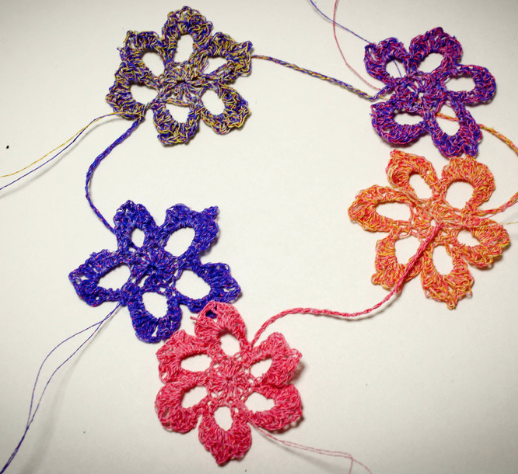

Shrinky Circuits

Developing a rapid prototyping technique for building circuit boards without involving conventional PCB/chemical etching procedures.

I have recently graduated from UC Berkeley in physics and astrophysics. My current research interest lies in data mining (for scientific applications) and human-computer interaction (citizen science, crowdsourcing, visualization). During undergrad, I worked on fabrication technology accessible to Makers and designers, mining large cosmological datasets, and supercomputer simulations of astrophysical objects. I am interested in creating technology that bridges the knowledge and skillsets of different communities of people. This August, I will be moving to UIUC to begin my graduate studies in computer science.
|

Skintillates: Design and Prototype Epidermal InteractionsDIS 2016 Honorable Mention Award |

‘I dont want to wear a screen’: Probing perceptions of and possibilities for dynamic displays on clothingCHI 2016 Best Paper Award |

Creating updated, scientifically-calibrated mosaic images for the RC3 Catalogue |
Developing a rapid prototyping technique for building circuit boards without involving conventional PCB/chemical etching procedures.

Collaboration with Google Advanced Technologies and Projects (ATAP) group on a new type of interactive wearable technology.
Creating low-cost, accessible fabrication technique for on-skin wearable electronics that can integrate with a variety of electronic components.

Designing a pipeline for generating scientifically calibrated images of large nearby RC3 galaxies using an adaptive algorithm for positional update.

Applying unsupervised machine learning algorithms to cosmological simulations for finding dark matter haloes.

Investigating how systematics affect the imaging data quality from the Sloan Digital Sky Survey.

Magnetohydrodynamics, adaptive mesh refinement simulations for the evolution of a collapsing dense core.

Investigating the effects of Papaloizou-Pringle and magnetorotational instabilities in accretion disk torus.